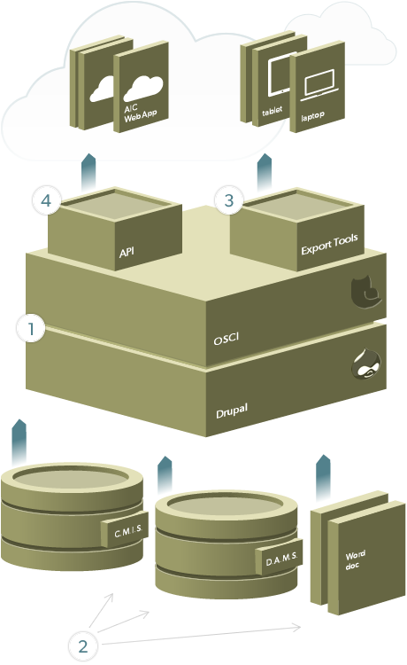

OSCI Toolkit Architecture

- At its core the OSCI Toolkit builds upon the Drupal content management system in order to provide an easy and extensible model for managing catalogue contents, structure, and media assets.
- In order to better support the publication workflows of institutions, the OSCI Toolkit is building specialized support for easily importing materials into the content management system. These include 1) "paste from Word" support which automatically extracts and maintains formatting, like footnotes, 2) the ability to harvest OAI-PMH compliant endpoints, commonly found amongst museum collection management systems, and 3) demonstration models of importing content from digital asset management systems which can serve as an example for supporting many commercial systems.
- The OSCI Toolkit strives for a model of write once, deploy everywhere. In order to support this a set of standard export features are provided. Users can click a button to export catalogues in several formats: ePub3 for supporting many modern reading experiences such as iBooks on the iPad, MOBI eBooks as an alternative format supported on devices such as the Kindle, and a standard PDF document.
- A rich Application Programming Interface (API) enables developers to create full-featured applications of their own. A complete JavaScript client library is readily available as a starting point for building a custom web application, or developers can use the OSCI Toolkit’s sample web application as a starting point.